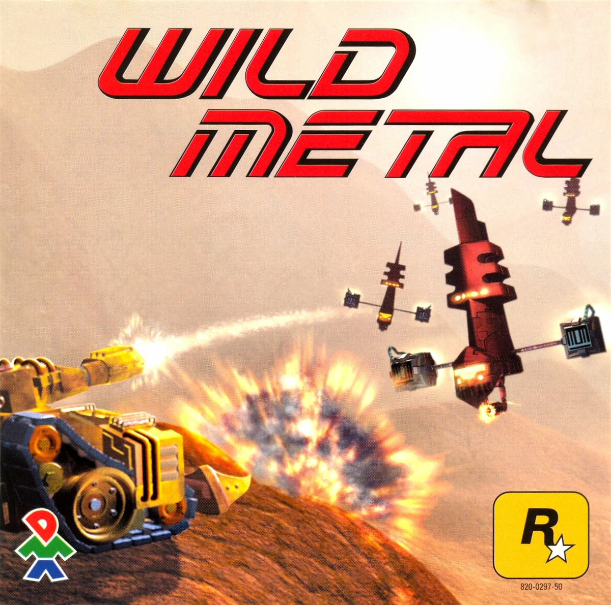
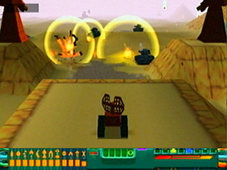
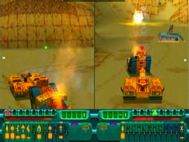
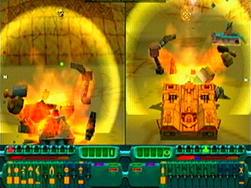
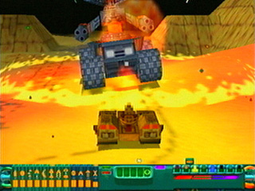

Wild Metal

Descripción
Caza o sé cazado. Mata o muere. Reclama el futuro de la humanidad. En Wild Metal nos ponemos en la piel de un cazarrecompensas intergaláctico al que le han encargado encontrar unos escurridizos núcleos energéticos, recuperarlos y sabotear las máquinas del sistema Tehric. Para conseguirlo tendremos que enfrentarnos a diferentes peligros y abrirnos paso por un entorno futurista en el que no será fácil sobrevivir.
Capturas del videojuego




Información del videojuego
| Desarrollador | Plataforma | Fecha de lanzamiento |
|---|---|---|
| DMA Design | PC, Sega Dreamcast | 1 de febrero de 1999 |